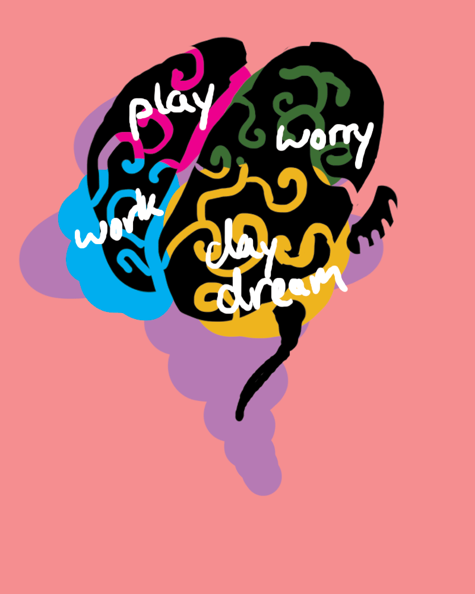

This is my net.art project. Since our digital media excells at expressing highly detailed visuals and sounds, I wanted to create various moods that can't adequately be expressed with words. These moods are felt rather than described, and can be used to capture and communicate to another person.
I do not own any of the music.